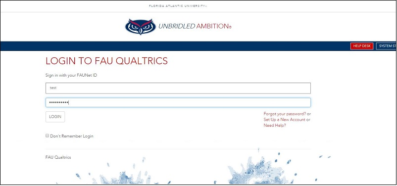

Instructions and Training
Qualtrics is a survey software. Survey software is a tool used to design, send and analyze surveys online. It’s the primary method of collecting feedback at scale whether that’s a simple questionnaire or a detailed study such as customer or employee feedback as part of a more structured experience management program. Qualtrics survey software was launched in 2002 as a way for academics to carry out sophisticated research that previously, online survey tools had been unable to handle because of the complex needs of academic research. All FAU administrators, faculty, staff, and students have access to use the software using their FAU Net ID and password. Below are instructions on how to sign up and create a Qualtrics account
-
Go to https://fau.qualtrics.com/ using your web browser
-
Sign in using your FAU Net ID and password like below.

-
After you sign in you will be presented with a page like the one below. Select the option 'No, I don't have a preexisting account here'.
-
You will then receive a notification that your account has been created. Select 'Sign in' to view your account.
-
Once you enter your account you will have to accept the Terms of Service. Click the green 'I Accept' button to continue.
-
After that you can start using Qualtrics by creating projects. You will be presented with a page like the one below with several options of different of surveys. If want to exit this box you can click 'Cancel'.

Training and Support
A guide to learning the survey platform of Qualtrics can be accessed through the below link:
Learn the Survey Platform
It can also be accessed by the clicking the 'Help' option on the top right and then selecting the Support Site option in the pop up box as shown below.
If you require more assistance on Qualtrics or if you have any questions about it, please send an email to jsingh@health.fau.edu.